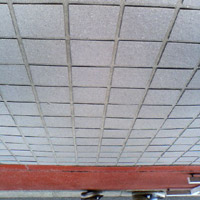
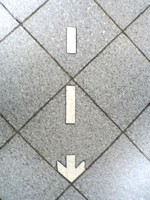
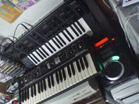
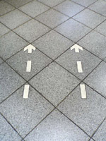
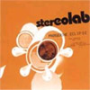
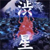
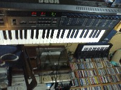

|
 |
#下北沢(2/1)
|
| 2004.1 / 2004.3 |
 |
#タイトルには特に意味無いです。写真（新橋駅）も特に。 とりあえず明後日はクラフトワーク神の来日が有るので行ってきますよ、今度こそワイヤースーツとかロボットとかを拝めるのだろーか？ あ、近所の中古屋で二枚。どちらとも500円。 |

#だいたいこーゆーモノは週末にきちんと更新すれば良いのにと思いつつ、昨日は鬼のよーに眠くて寝てました。 |
#なんだか色々書こーと思ってたのに全部忘れちゃってる感じだな。 家賃の更新をしたのでお金が無いのです、全然。LOVEJOYもDCPRGもダモ鈴木もライヴ行ってないです。行きたかったけど。 同様の理由によって、CDもあんまり買ってないです。機材は買っちゃったけど。とりあえず、忘れないように買いたいCDを書いておきます。 そうあと、こないだヤフオクでRolandのRS-09を落札。今週末入手予定、早く触ってみたい。 ♪坂本真綾/しっぽの歌
|
 |
STEREOLAB/MARGERINE ECLIPSE #一曲目のイントロかっちょえぇ～。 久々にキュートな電子音が戻ってきた感じ、メアリーハンセンの居なくなったのは悲しいけど。 |
 |
渋さ知らズ/渋星 #えーと渋さのCD買うと思わなかったんですけど、一曲目の音圧に負けて買っちゃいました。 BE COOL以来のスタジオ盤になるのかな？無条件でテンション上がるような感じです。またライブ見てー |
| 菊地成孔 featuaring 岩澤瞳/普通の恋 #「普通の恋」はネットであんまり評判良くなかったけど、そんなに悪くないんじゃないかと。昔ライヴでやってたアレンジの方が確かに好きだけど。 「フロイドと夜桜」大ウケ、♪クリスマスクリスマスお釈迦さま～。菊地成孔さんが「誰コレ？」みたいな感じで歌いまくりです。 |

ヤフオクで\7000で落札したKORGのDW8000ってシンセが届きました。ってゆーかデカイ・・・（自分の想像のサイズの1.5倍くらい）、持ち歩くのはちょっと厳しいかも。